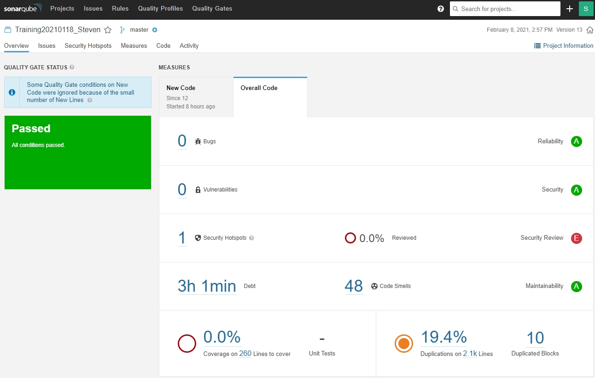
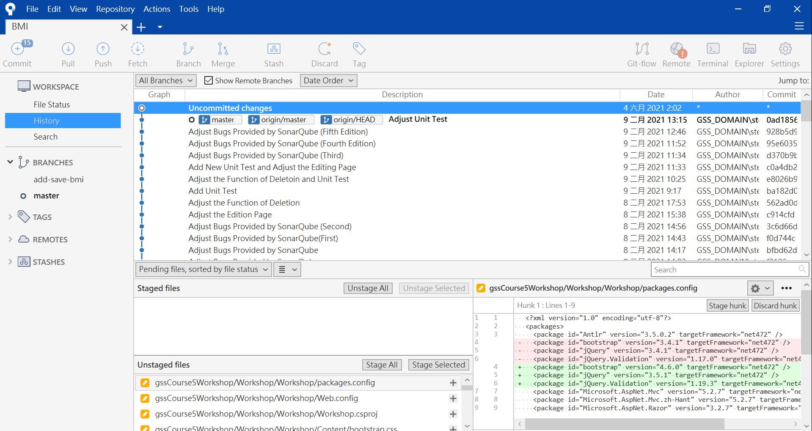

王子麟
章魚天堂園 304 號
s1071626@mail.yzu.edu.tw
剛結束新人訓練之後，我與系上的另一位同學以及一位正職新人被去分配支援 FBU，進到 FBU 第一天，我們就被要求再接受 FBU 的新人訓練，大部分的內容都跟新人訓練的相似，但是多了一個 FBU 部門專屬的「底層訓練」， 底層 UI 是一種 HTML 架構，它將某個主流客製化 UI 的功能與客戶經常需要的功能結合，經過包裝後的底層 UI 既有好看的外觀，也有許多只靠簡單程式碼就能達到的效果。 底層訓練中還有一項令我大開眼界的是底層 UI 與 Excel 結合的技術，只需利用 Excel 以及 JavaScript 設定即可減少很多程式撰寫的時間。 最後是製表技術，在進公司以前我並未學習過製表技術，在習得製表技術後我能夠一鍵將 DataGrid 上的資料製成報表，對我來說非常方便。
結束訓練後我被分派到 K 銀行的專案小組，接到的第一份工作是調整 K 銀行旗下的某個徵授審系統 20 份評估 Excel 裡的公式，這份工作對在系辦協助處理過文件的我來說非常容易，因此給我一種感覺是部門好像都會派給實習生難易度較低的工作實習生難易度較低的工作， 但是下一份指派給我的工作是要維護一支現有的程式，這份問題單要操作的部分包含了讀取 Excel、Log 檔寫入以及程式過版等，這幾項對當時的我來說只有程式過版的部分比較有概念，讓不知道從何開始下手的我非常苦惱。 第二天開早會時專案經理告訴我遇到問題時一定不要吝嗇地問，這讓平常比較不愛說話的我開始常常去找比較資深的同仁問問題，不僅使我處理問題單的速度加快，也讓我開口的時候更加自信。
在簡單了解完專案的環境後，我一次就收到了 7 張問題單，雖說 7 張看起來很多，但是因為這 7 張單子要改的程式邏輯負責專案的系統分析師說只要先解決第一張單子，後面的單子很快就能上手， 每張單子都有各自的到期日，必須要在到期日之前把它完成，當時的我並不完全熟悉專案的全部內容，像是程式規格文件放置的位置，或是寫完一段邏輯後如何讓程式在網頁上呈現，因此那時的我覺得身上開始有點壓力。 在解決第一張單子時怕沒能在期限內修改完會被專案經理罵，那一天我在辦公室待到了晚上 7 點，正在苦惱我還需要做多久時，帶我們 FBU 新人訓練的同仁發現我很晚了還在辦公室跑來關心我， 我告訴他我怕沒能在期限內完成會被罵，他才告訴我若是在下班前覺得今天沒有辦法完成這張單子，若是因為突然被指派較為緊急的工作或是還在理解程式的架構等正當理由，都可以與專案經理協商把期限往後延一天， 至此才解除我對完成期限的迷思，往後在處理問題單時我不再這麼擔心自己拖延了整個專案的進度，身上的壓力也漸漸舒緩。

在我將徵授審系統的 7 張單子都完成之後，專案經理又將我分派去支援 K 銀行的房貸徵審系統，到另外一個完全不同的小組意味著又要重新熟悉該專案的架構等相關作業，不過慶幸的是，房貸系統與徵授審系統有些微相似的地方，因此這次我能夠花較少的時間在熟悉架構上，也間接的加快了開發的速度。在 房貸系統正式包版到客戶端進行測試之後我在房貸系統的工作就告一段落，因此我又被分派去支援 F 銀行的徵審系統以及 C 銀行的 E 系統。 在支援 E 系統時處理第一張問題單的時候是我認為開始實習之後遇到最挫折的一段時光，E 系統是使用前面說過的底層 UI 結合 Excel 技術來開發，當時FBU新人訓練的時候我因為時程的關係並沒有能夠實做這部分的訓練，開發前只是再看一次教材而已， 再加上這段時間又是異地辦公，沒有辦法像之前一樣比較有效率的面對面問問題。開發 E 系統的同時，之前支援房貸系統的一個問題單一直被測出有問題，問題單被退回四、五次，不僅 E 系統開發的速度非常的慢，房貸系統的問題一直無法解決讓我十分的頭痛， 在兩個專案中不停切換也使我有時會搞混，常常發生解決完房貸系統問題之後就忘記之前 E 系統開發到哪裡的情況，最後在系統分析師與客戶多次確認邏輯後才把問題解決，使我能夠專心開發 E 系統。
暑期的實習對我來說是一個很特別的體驗，與寒假不同的是，學期末接近暑假的期間國內突然爆發一波疫情，使得公司讓大部分實習生採異地辦公的模式，正職則是分組輪流到辦公室上班，遠距辦公前幾天，我被分派進到C銀行的E系統專案，一開始專案經理讓我處理較簡單的需求變更，讓我覺得這個專案的架構並不會很複雜。 但是當我接到要開發全新程式的工作時，疫情突然爆發使得我採取在家遠距上班的模式，大大增加我開發上的困難，遇到問題的話不如在辦公室內詢問那麼容易，使用通訊軟體時常無法很完整的說明我的問題在哪，進而讓開發的速度變得很緩慢，一直到對環境以及架構比較熟悉之後速度才有所提升。

在實習期間，我支援 K 銀行的徵授審系統、K 銀行的房貸系統、F 銀行的徵審系統以及 C 銀行的 E 系統等四個系統。 其中 K 銀行的徵授審系統完成了 12 張問題單，K 銀行的房貸系統完成了 4 張問題單，上述兩個系統皆已包版至客戶端進行測試，若程式測是有問題專案經理會再指派問題單給我進行程式修正。 F 銀行的徵審系統完成了 8 張問題單，這個系統是我接觸最少的系統，問題單的要求幾乎都只要修正現有的資料庫語法，只有一張的要求是畫面要新增欄位，對我來說難度並不高，現在 F 銀行的徵審系統主要是交給另外一個正職同仁去修改。 目前我正在進行開發的系統是 C 銀行的 E 系統，完成了 1 張問題單。
在新人訓練期間，我認為我扮演的是學習性的角色，這段期間我不斷學習新的程式寫法、學習公司的一些相關軟體如何操作以及學習如何與其他實習生以及正職新人相處。 被分派到FBU後，我認為我扮演的是支援性、學習性的角色，進到部門後一直在幫忙各個專案，不論是問題單或是客戶端測試後臨時需要修改的程式，我認為能幫得上忙就盡量幫，同時我仍然在學習如何與同事、專案經理以及系統分析師等同仁相處。

在進到公司實習後，我學到非常多關於程式方面的技術與知識。從輔助工具開始說起，在學校的程式實作課，助教通常會給參考程式讓我們去解決問題，大家都會先將投影幕上的參考程式打在自己的編譯器上，這對打字不快的人來說非常不方便， 公司新人訓練課程有讓我們安裝輔助工具，若你想要打一段程式碼，只需打幾個字就會出現與這幾個字相關的程式碼，選取要使用的程式碼後就會自動幫你完成整段，這樣的輔助工具不僅使打字不快的人寫程式碼時不會這麼痛苦，它也幫助我在開發時保持良好的效率。 另一項輔助工具為程式碼品質輔助工具，在程式開發完畢後，難免都會留下不必要的註解或是沒有用到的變數、函式等，使用該輔助工具能夠提醒你哪些部分式不需要的以供刪除，不僅讓程式讀取的速度不會那麼慢，也能夠使整個程式看起來更乾淨，將來自己或他人要修改時比較容易找的到要修改的部分。
再來是客製化 UI，以前在課堂上學習 HTML 的時候，見到 UI 都是最原始最簡陋的，能觸發的功能也有限，新人訓練課程有介紹一款現成的客製化 UI，它不僅將原本可能要好幾行程式碼才能執行的功能簡化，外觀也較原始的 UI 更美觀，進到 FBU 後，部門的產品幾乎都是以客製化 UI 進行開發，因此讓我覺得客製化 UI 非常好用，將來開發屬於自己的程式時，使用它就能夠減少許多麻煩的工作。
接著是 MVC 架構，以前在課堂上學習將程式與資料庫連結時，使用的是簡單的架構，進到公司後才知道，市面上主流的產品幾乎都是使用 MVC 架構，剛開始學的時候覺得這個架構非常艱難，程式的寫法很不直覺，在熟悉之後才知道 MVC 架構的好處，其中一項是非常容易維護。MVC 架構的程式特性是將重複性高的函式抽成共用函式，這樣的特性使將來程式出現錯誤時，不用修改太多重複的地方，讓維護的效率能夠提升。
還有 Debug 技術，我認為這是讓我收穫最大的一部分，在課堂上學程式時，學校從未教過這項技術，導致程式出問題時只能慢慢找，有時還不一定找得到。來到公司學習這項技術後，不僅讓我在開發的效率大大提升，出現問題時能夠善用中斷點去一步步執行程式檢查哪部份出問題，有個朋友來請我幫忙解決程式問題時，我也利用這項技術很快地就將問題排除了，若是以前的我可能還要花上好幾小時才能夠解決，利用 Debug 技術讓我在30分鐘內就解決程式錯誤的問題，因此我認為這項技術對寫程式的人來說十分重要。
最後是過版工具，在學校做的小型專題幾乎都是每人寫一部份的程式，最後再結合在一起，這樣的方法不僅開發效率不高，也很容易讓程式無法運行。在新人訓練期間我學到了一種程式過版工具，它能夠將每個人所撰寫的程式合併成一份完整的，不僅能夠節省合併的時間，也不會使程式不能運行，我認為這個工具是每個專案都應該要必備的工具。
進到公司實習後，生活作息是我一直努力去改進的部分，平常在學校的時候可以睡到快要上課再起床，但是開始實習後，公司規定早上9點上工，讓習慣熬夜的我非常難以適應，導致新人訓練的時候有時會沒有精神，負責新人訓練的主管也發現我有時會沒有精神，提醒我作息要慢慢調整好，為此我還特別上網找能夠讓自己快速入睡的方法，反覆實測後才找到一種能夠使我快速入眠的方法。
再來是與他人互動的方式，在進公司之前，我是一個不太愛說話的人，遇到不熟的人更是安靜到似乎我不存在的樣子，任何想法只會憋在心裡不太會展示出來。但是進到公司後，我發現與他人互動是非常重要的一環，在新人訓練時我遇到許多問題，與其他人不熟的我只能跟隔壁認識的同學討論，若討論沒有結果只能自己在那想老半天，浪費非常多時間。 主管發現我遇到問題時有時會想很久，就鼓勵我多向周圍的實習生或是指導員問問題，才不會浪費開發的時間，嘗試問問題之後使開發的效率變得非常之快，同時我認為問問題的技巧也要拿捏得好，當詢問別人問題時，可以先說明你嘗試過哪些方法，但仍然無法達到預期的效果，會使幫助你的人更明白要從何處跟你說明，到現在我仍然在學習問問題的技巧。
大四下接近 10 月底時，似乎是部門接了太多案子的關係，導致整個部門都很忙，我負責的 C 銀行專案也因為客戶提的新需求 11 月底就要交付而跟著忙了起來，處長也因此要求專案的人必須要到客戶那邊駐點。在還沒去駐點之前，已經去過的正職同仁說駐點其實比在公司上班還要輕鬆，當時我對駐點還抱有一點期待，但是當真正在駐點的時候，我才發現並不是這樣。
第一天駐點時我負責檢查程式有無照著需求變更時，我發現之前來支援的同仁因為並不熟悉專案開發的規範而並沒有根據需求去改變程式，有做改變的部分也不是很正確，但因為該同仁當時在支援別的專案，因此我花了很久的時間才把程式的版本復原並照著客戶的需求做變更，也導致我去駐點的第一天就加班到很晚才離開，後面幾天的駐點也都有加班。 經過這一陣子駐點我發現心態的調整真的非常重要，剛開始接到要加班的通知時會心裡會覺得非常不平衡，要收拾別人的爛攤子，同時又有其他客戶提出來的問題，覺得非常氣餒，但當把一個一個需求單以及問題單解決之後，就覺得其實前面痛苦的過程其實都變得還好了，面對接下來客戶提出的其他需求也變得更有動力去解決。
在實習期間，我在公司的表現有值得嘉獎的，也有應該要改進的部分。我認為我在公司的學習速度是很不錯的，在解決 K 銀行徵授審系統的7個問題單時，第一份花了我不少時間去理解及修改程式，但是經過第一份的磨練後，我在解另外 6 個問題單的速度有著明顯的提升，在解其他系統的問題單時同樣是第一份會比較慢一些，但是之後解決的速度會非常快，甚至一天可以解決 2 至 3 個問題單，因此我認為我的學習速度是值得嘉獎的。 另外我也想給漸漸勇於交際的自己稱讚，可能是業務太繁忙的原因，FBU 一直在招募新人，因此我們部門時常都會有新進的正職或是實習生，有句話說：「多一個敵人不如多一個朋友」。在進到 FBU 後，我常常會與一起進行新人訓練的正職同仁以及新近的正職或實習生一起去吃飯，慢慢的我與他們就非常熟識了，能夠勇於交朋友，這跟開始實習之前的我有著非常大的區別，因此我想給自己一個稱讚。
再來是要改進的部分，我若是精神狀態不佳的話，臉常常會看起來臭臭的，給人一種不討喜的感覺，這點在新人訓練的時候主管就有找我聊過，我覺得我必須要將這部分改進，時常面帶笑容才不會讓別人誤會心情不好。接著是心態問題，前面有說到有時我的問題單很快就解決了，但是離下班還有一段時間，因此有時我會稍微偷懶滑手機，我覺得這樣是不太好的，我認為若是手邊沒有事情的話，可以詢問專案經理有沒有其他事情可以讓我幫忙，畢竟公司也不是請我來辦公室滑手機的。
從開始實習到現在讓我學到了不少，也讓我更加認識自己，還從中學到了職場的應對進退，學到這些之後能夠使我將來在求職能夠更順利，我也期許我自己能夠在接下來的實習期間學到更多東西，也希望前面提到要改進的部分在實習結束後已不復存在。
因為本土疫情狀況不斷惡化，我與系上另一位同學從 5/14 就開始實施 Work From Home，一開始認為在家工作會比較輕鬆，但是情況與我想像的出入很大。在家上班最大的壞處是開發時遇到問題無法即時得到回答，因為不是面對面的問答，所以在詢問資深同仁時可能不會立即獲得答案，或是同仁在協助我釐清問題時因無法直接操作我的設備使過程耗費大量的時間，再加上專案經理不是在場監督開發進度，使開發的效率變得非常差。對於這種情況我認為只能將自己的態度給修正，上班時間就認真上班，不要從事任何與公司無關的事情，才能避免開發效率降低的問題。
我認為，系上針對專業實習的規畫無可挑剔，從面談到媒合，再到將來要進行的成果發表，安排都在合理範圍內，不過我還是有兩點針對學校課程的建議。首先是我建議系上的程式課一定要教如何 Debug，我認為會與不會這個技術，對寫程式來說差別是非常大的，這項技術不僅對業界程式開發相當有幫助，我相信 Debug 技術也能應用在研究領域。再來是我建議程式課的內容可以挑選現在比較主流的程式語言或架構，像是我有聽說今年二下的網際網路程式設計學得就是MVC架構的課程，我認為相當不錯，若程式課能夠融入主流得程式或架構，較能與業界銜接，面試時主管也一定會優先考慮學過這些的資管系同學。